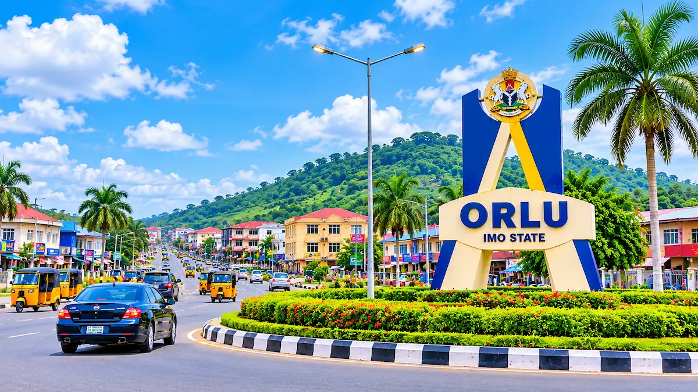

Our Heritage
Orlu has a rich Igbo heritage. Its people predominantly speak the Isuama dialect of the Igbo language. The town has a long history shaped by traditional institutions, trade, and missionary activities.
Orlu Chamber of Commerce

Orlu is a historic Igbo community in Imo State, southeastern Nigeria. Known for its rich heritage, commercial activities, and entrepreneurial spirit, Orlu continues to play an important role in the economic and social development of the region.
Orlu has a rich Igbo heritage. Its people predominantly speak the Isuama dialect of the Igbo language. The town has a long history shaped by traditional institutions, trade, and missionary activities.
Orlu is widely recognised for its commercial activities. Its businesses include pharmaceutical enterprises, manufacturing, timber trading, and various small and medium-sized businesses.
Orlu is made up of numerous autonomous communities with distinctive traditions and cultural identities. Cultural festivals and community activities help preserve its heritage.
Educational and healthcare institutions contribute to the development of Orlu. Notable institutions include Imo State University Teaching Hospital and the Imo State School of Nursing and Health Technology.
Connect with local business owners, entrepreneurs, and professionals to build valuable business relationships.
Learn practical strategies for improving business operations, customer service, and business growth.
Temperature:
Description: